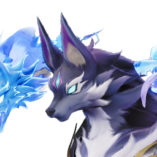
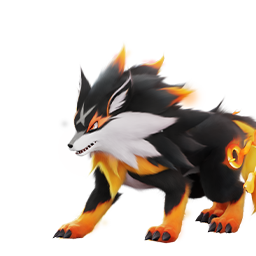
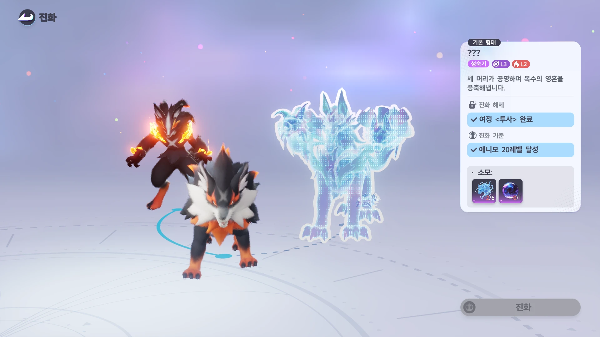
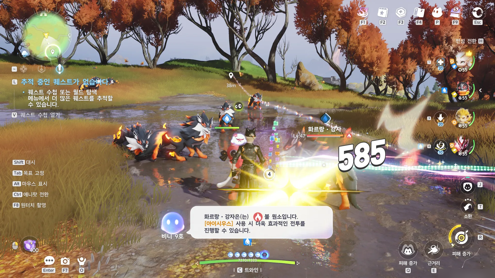
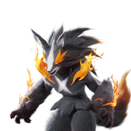

애니모 헬울프 진화 방법, 늑대의 영혼 얻는 법부터 여정 투사까지
화르랑을 애니모 20레벨까지 찍어놓고 진화 버튼을 눌러봤다가, 화면에 뜬 재료 목록 보고 저 혼자 잠깐 멈칫했거든요. '여정 〈투사〉 완료'는 또 뭐고, '늑대의 영혼'은 어디서 구하나 싶어서 그날부터 며칠을 늑대이빨 능선에 눌러앉아 있었는데요, 오늘은 그렇게 직접 확인한 헬울프 진화 조건이랑 재료 파밍 법을 하나씩 풀어볼게요.
헬울프 도감 소개문을 보면 "강자에게 도전했다가 패배한 화르랑은 같은 억울함을 품은 채 쓰러진 동료들의 영혼을 흡수하고, 그 복수심에 이끌려 움직인다"는 문장이 나오는데요, 이게 그냥 설정 문구가 아니라 실제 진화 방법이랑 그대로 맞물려요. 진화 재료 자체가 '강자'를 잡아서 얻는 영혼이거든요. 서사랑 시스템이 이렇게 딱 들어맞는 경우가 흔치 않아서 저는 이 부분이 제일 재밌었어요 ㅎㅎ.

공식 위키 도감에 올라온 헬울프(NO.004) 클로즈업이에요 — 원소는 불/어둠, 포지션은 격파랍니다.
헬울프, 화르랑에서 갈라지는 그 애니모예요
헬울프는 NO.004 · 불/어둠 속성 · 격파 포지션 · 성숙기 애니모예요. 성장기인 화르랑(NO.002)에서 진화가 갈라지는데, 한쪽은 이글랑(NO.003)이고 다른 한쪽이 오늘 다룰 헬울프예요. 같은 부모에서 나왔는데 원소부터 하나 더 붙고(이글랑은 그대로 불, 헬울프는 불/어둠) 포지션도 딜에서 격파로 아예 바뀌는 게 특이하네요.
공식 위키 도감 페이지를 열어보면 진화 루트는 유년기 → 성장기 → 성숙기로만 표시돼 있고, 정작 '어떻게 진화시키는지' 조건란은 비어 있어요.🔍 위키 미기재 위키에 있는 도감 86종 페이지를 전수 확인해 보니 전부 이런 식이라 이건 헬울프만의 문제는 아니고요, 그래서 이 글에 정리한 조건은 위키가 아니라 인게임 진화 화면을 직접 열어서 확인한 값이에요.

진화 전 형태인 화르랑(NO.002)이에요 — 여기서 이글랑 아니면 헬울프, 둘 중 하나로 갈라져요.
헬울프 진화 조건, 세 가지로 정리하면
헬울프 진화는 여정 〈투사〉 완료·애니모 20레벨·늑대의 영혼 6개+어둠석 1개, 이 세 가지가 한꺼번에 갖춰져야 열려요. 제가 인게임 진화 화면을 캡처해뒀는데, 소모 재료 칸에 2/6·0/1 이렇게 카운터가 찍혀 있는 걸 보면 개수는 확실해요.
| 항목 | 조건 |
|---|---|
| 진화 해제 | 여정 〈투사〉 완료 |
| 진화 기준 | 애니모 20레벨 달성 |
| 소모 재료 | 늑대의 영혼 ×6 + 어둠석 ×1 |
여기서 '여정 〈투사〉'는 퀘스트 이름이 아니라 퀘스트의 유형이 '여정'이라는 뜻이에요. 처음엔 저도 '투사 퀘스트'인 줄 알고 검색했는데, 인게임 화면 표기를 다시 보니 여정이라는 분류 아래 〈투사〉라는 개별 챕터가 걸려 있는 구조더라고요. 애니모는 정식 출시(9월 16일 수요일)한 지 나흘밖에 안 됐고 이 글은 2026년 9월 20일 기준으로 확인한 내용이라, 패치로 조건이 조정될 가능성은 열어두시는 게 좋아요.

이미지: 인게임 직접 캡처(2026-09-20)
실제 진화 화면이에요. 여정 〈투사〉 완료 표시랑 20레벨 조건, 그리고 늑대의 영혼 2/6·어둠석 0/1 카운터가 이렇게 떠요.
여정 〈투사〉는 어떻게 진행하나요
여정 〈투사〉는 늑대이빨 능선 지역의 서브 퀘스트예요. 다만 이 진행 순서는 제가 국내에서 아직 못 찾아서 해외 가이드 사이트 allthings.how의 'Journey: Warrior' 공략 기준으로 정리한 것이니 참고만 해주시고, 한국어 인게임에서 그대로 나오는지는 저도 아직 대조 못 했어요.🔍 해외 가이드 기준 · 국내 대조 필요
- 1일차 — 늑대이빨 능선에서 낮 시간에 숲 중앙 쪽으로 가면 탄멍멍·화르랑이 둘러앉은 모닥불이 있는데, 거기 있는 애니모와 대화합니다. 시간을 밤으로 바꾼 뒤 북동쪽 고사목 공터로 이동해 헬울프를 만나 처치하고, 모닥불 근처에 피어오르는 보라색 연기 기둥에서 재료를 회수합니다.
- 2일차(서버 리셋 후) — 이날은 전투 없이, 모닥불의 애니모와 다시 대화만 하고 연기 기둥에서 재료를 회수합니다.
- 3일차(다시 서버 리셋 후) — 모닥불에서 남은 대화를 마저 나누고 재료를 먼저 회수한 뒤, 헬울프와 다시 한 번 붙습니다. 이 재대결은 1일차 전투보다 훨씬 세다고 하니 물이나 바람 속성 애니모를 데려가시는 게 좋고, 여기서 이기면 여정이 마무리된다고 해요.
여정의 시작 지점은 앞서 1일차에 나온 모닥불 대화로 보이는데, 이게 한국어 인게임에서 정식 '수락' 절차로 표시되는지는 저도 아직 확인을 못했어요.🔍 수락 절차 표시 미확인 확인되는 대로 이 글에 이어서 채워둘게요.
늑대의 영혼은 어디서, 어떻게 모으나요
늑대의 영혼은 여정 〈투사〉를 끝낸 뒤 「화르랑 · 강자」를 처치하면 확률로 얻어요. 「화르랑 · 강자」는 이름 그대로 화르랑의 강한 개체인데, 늑대이빨 능선의 좌표 -1120, 1315 부근에 낮 시간대로 가면 여러 마리가 몰려 있는 걸 직접 확인했어요(제가 마주친 개체는 레벨 47이었어요).

이미지: 인게임 직접 캡처(2026-09-20)
늑대이빨 능선 좌표 -1120, 1315 부근에서 「화르랑 · 강자」(Lv.47)랑 교전 중인 장면이에요. 이 근처에 몰려 있어서 반복 사냥하기 편해요.
다만 확률 드롭이라 6개를 다 모으려면 반복이 좀 필요해요. 상성을 맞추면 그만큼 빨리 잡을 수 있는데, 화르랑·강자는 불 원소라 물이나 어둠 속성으로 때리면 1.6배 피해가 들어가고, 반대로 불·풀·얼음 속성으로는 0.625배밖에 안 들어가요. 실제로 전투 화면에서 도우미 NPC가 물 속성인 '아이시우스' 계열 애니모를 데려가라고 안내해주기도 하더라고요.
| 내 애니모 속성 | 화르랑·강자 상대 배율 |
|---|---|
| 물 · 어둠 | 1.6배(유리) |
| 불 · 풀 · 얼음 | 0.625배(불리) |
어둠석 1개는 어디서 구하나요
솔직히 말씀드리면 어둠석은 아직 어디서 얻는지 못 찾았어요. 영문 자료에는 어둠 원소를 가진 '알파(강자)급' 개체가 드롭한다는 얘기가 있긴 한데, 한국어 인게임 화면으로 직접 확인하기 전까지는 단정하지 않으려고요.🔍 획득처 미확인 늑대의 영혼처럼 눈으로 확인되는 대로 이 글을 갱신해서 채워둘게요.
진화하면 뭐가 좋아지나요, 이글랑이랑 비교하면
헬울프는 무력화 108로 압도적인 '격파형', 같은 분기인 이글랑은 공격 119의 '공격형'이에요. 공식 위키 속성치를 화르랑(진화 전)까지 셋 다 나란히 놓고 보면 이렇게 갈린답니다.
| 항목 | 화르랑(진화 전) | 이글랑 | 헬울프 |
|---|---|---|---|
| HP | 85 | 95 | 95 |
| 무력화 | 45 | 52 | 108 |
| 공격 | 111 | 119 | 89 |
| 마법 방어 | 63 | 75 | 80 |
| 물리 방어 | 72 | 80 | 70 |
| 에너지 회복 | 80 | 90 | 99 |
| 속성 합계 | 456 | 511 | 541 |
표를 보면 이글랑은 공격이 화르랑보다 더 올라간 '순수 딜형'으로 이어지고, 헬울프는 공격이 오히려 89로 낮아지는 대신 무력화가 45에서 108로 두 배 넘게 뛰어요. 상대를 빠르게 무력화시켜서 흐름을 끊는 역할을 노린다면 헬울프, 화력 자체를 밀어붙이고 싶으면 이글랑 쪽이 방향에 맞아요. 속성 합계만 보면 헬울프가 541로 이글랑(511)보다 높긴 한데, 이건 포지션이 다른 애들이라 총합 숫자만으로 우열을 가리기보다는 파티에서 어떤 역할을 맡길지로 고르시는 게 맞다고 봐요.

같은 화르랑에서 갈라지는 반대쪽, 이글랑(NO.003)이에요 — 헬울프랑 나란히 놓고 보면 방향이 확실히 갈려요.
특성이랑 전투 스킬은 어떤가요
헬울프 특성은 '충만한 영혼' 하나예요. 전투 중 일반 공격을 8회 사용하면 이 상태에 진입하는데, 다음 스킬 위력이 강화되면서 그 피해는 일반 공격 피해로 간주된다고 위키에 정확히 적혀 있어요.
| 스킬 | 요약 |
|---|---|
| 화염 돌진 | 영혼 분신 2마리 소환해 공격, 충만한 영혼이면 1마리 추가+슈퍼아머 |
| 늑대 돌진 | 영혼 분신 2마리 소환해 공격, 충만한 영혼이면 1마리 추가 |
| 크로스 파이어 | 화염 레이저로 최대 9회 관통 피해, 충만한 영혼이면 위력 45%↑ |
| 늑대의 영혼 | 명중 목표 무력화 효율 스택당 10%↑(최대 3스택·20초), 충만한 영혼이면 탄사 5→7회 |
| 늑대 습격 | 영혼 분신을 전방 돌진시켜 명중 시 폭발 피해 |
여기서 꼭 짚고 싶은 게 있는데, '늑대의 영혼'은 진화 재료 이름이면서 동시에 헬울프의 전투 스킬 이름이기도 해요. 재료 늑대의 영혼은 화르랑·강자를 잡아서 얻는 아이템이고, 스킬 늑대의 영혼은 진화한 다음 헬울프가 직접 쓰는 무력화 기술이라 완전히 다른 물건이죠. 헷갈리기 딱 좋은 동명이의인데, 오히려 이렇게 짚어두면 검색할 때 훨씬 덜 헤매실 것 같아요.
헬울프 진화 자주 묻는 질문
Q. 이글랑 쪽으로 진화하려면 뭐가 필요한가요?
아직 확인을 못 했네요. 헬울프 쪽 재료(늑대의 영혼 6개+어둠석 1개)만 인게임에서 직접 봤고, 이글랑 분기의 소모 재료는 저도 다음에 그쪽으로 진화시켜보고 이 글에 이어서 채워둘게요.
Q. 늑대의 영혼 스킬이랑 재료 이름이 같은데 헷갈리지 않나요?
네, 실제로 검색해보면 '늑대의 영혼'을 검색어로 넣었을 때 헬울프 스킬 설명만 나오는 경우가 많더라고요. 재료 쪽 이름이 아직 덜 알려진 것 같아서, 위에 특성·스킬 항목에 따로 구분해뒀어요.
Q. 화르랑 · 강자는 낮에만 나오나요?
제가 확인한 건 낮 시간에 좌표 -1120, 1315 부근에 여럿 몰려 있었다는 것까지예요. 밤에는 아예 안 나오는지, 아니면 숫자만 줄어드는지까지는 확인을 못 해서 낮 시간대로 가시는 걸 우선 추천드려요.
헬울프 진화 정리
한마디로 헬울프 진화는 여정 〈투사〉 완료 + 애니모 20레벨 + 늑대의 영혼 6개 + 어둠석 1개, 이 세 가지가 다 맞아떨어져야 열려요. 늑대의 영혼은 여정을 끝낸 뒤 늑대이빨 능선(-1120, 1315)에서 화르랑·강자를 낮에 잡으면 확률로 나오니 물·어둠 속성 애니모를 데려가 반복하시면 돼요. 화력보다 무력화로 흐름을 끊고 싶으신 분이라면 헬울프 쪽이 확실히 재밌는 선택일 것 같아요.
✔ 애니모 같이 보기 좋은 내용
· 애니모 전투 티어표 정리, 1티어 애니모 추천까지 짚어봤어요
· 애니모 캠핑카 생활 티어표 추천, 홈 능력 13종 정리
· 애니모 용어 총정리, 천휘 애니모 획득부터 희귀도 평가 차이부터 선천 후천 어빌리티, 옵시디언까지
참고한 곳
· 애니모 공식 위키 · 헬울프 도감 페이지
· 애니모 공식 위키 · 화르랑 도감 페이지